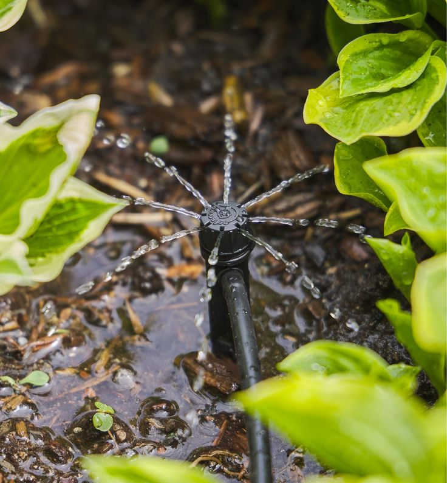
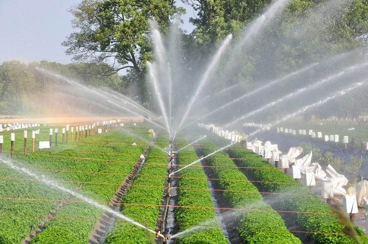
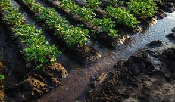
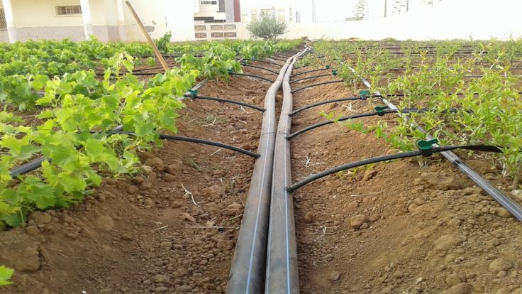
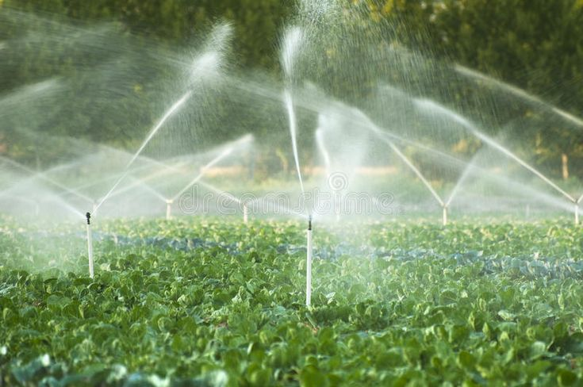
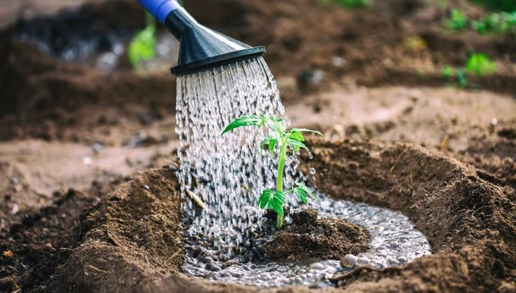
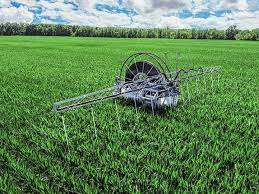

Drip Irrigation
Used to conserve water and improve irrigation efficiency, especially in areas with limited water resources.
- Usage: 60%
- Regions: Jordan Valley, Zarqa, Mafraq

Sprinkler Irrigation
Water is sprayed onto crops using pipes and sprinklers, suitable for large areas.
- Usage: 25%
- Regions: Salt, Ajloun, Jerash

Traditional (Surface) Irrigation
Water flows through channels to agricultural lands, still used in certain regions.
- Usage: 15%
- Regions: Northern Badia, Tafileh

Water Sources
- Surface water: 39% - Surface water comes from rivers and dams.
- Groundwater: 55% - Groundwater is mainly used in agriculture.
- Treated wastewater: 6% - Treated wastewater is used for irrigation on a significant scale.

Irrigated Area
- Total: 76,000 hectares
- Jordan Valley: 33,000 hectares
- Highlands & Desert: 43,000 hectares

Challenges
- Scarcity of fresh water.
- Climate change and rising temperatures.
- Heavy reliance on groundwater.
- Urban expansion reducing agricultural lands.

Innovations
- Hydroponic Farming: Agricultural technique using less water, suitable for small areas. Examples: Rooftop farms in refugee camps.
- Using Treated Wastewater: Utilizing treated water from purification plants for agriculture. Examples: Treatment plants in Jordan Valley.